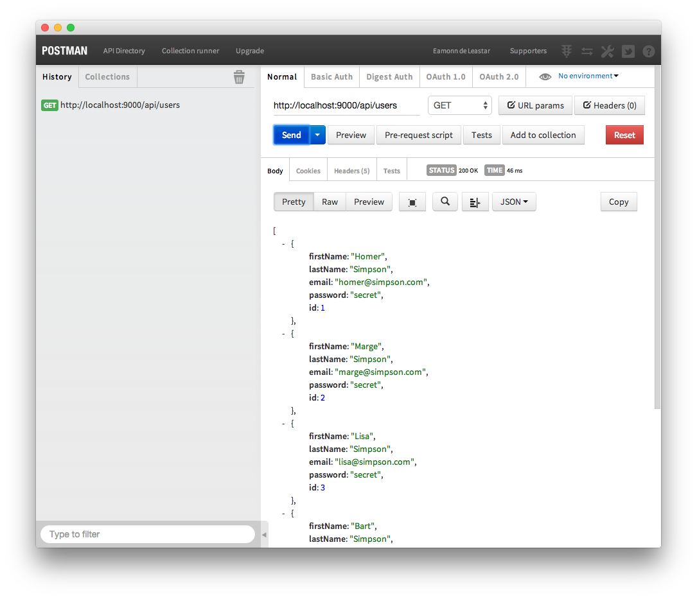
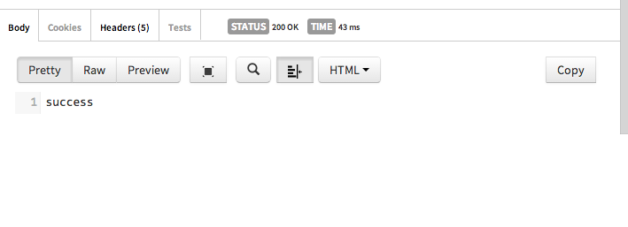

Before starting this lab, it might be a good idea to download a fresh version of Eclipse - without any Android tools installed - and use this version just for the apps we are about to build in this lab. Select the 'Eclipse for Java EE Developers' distribution
Using Play, create new app in the usual way:
play new donation-service-play
Generate an eclipse view of the project"
play eclipsify
Before you import this project into eclipse, create a new workspace - just for this project, ... and import the project in th usual way.
Create a new package called 'models' - and bring in these classes:
package models;
import javax.persistence.CascadeType;
import javax.persistence.Entity;
import javax.persistence.OneToMany;
import java.util.List;
import play.db.jpa.Model;
@Entity
public class Donation extends Model
{
public int amount;
public String method;
public Donation (int amount, String method)
{
this.amount = amount;
this.method = method;
}
public String toString()
{
return amount + ", " + method;
}
}
package models;
import javax.persistence.CascadeType;
import javax.persistence.Entity;
import javax.persistence.OneToMany;
import java.util.List;
import play.db.jpa.Model;
@Entity
public class User extends Model
{
public String firstName;
public String lastName;
public String email;
public String password;
public User(String firstName, String lastName, String email, String password)
{
this.firstName = firstName;
this.lastName = lastName;
this.email = email;
this.password = password;
}
}
Create a new package called 'utils', and bring in these classes:
package utils;
import java.lang.annotation.Annotation;
import java.lang.reflect.Type;
import play.data.binding.Global;
import play.data.binding.TypeBinder;
import com.google.gson.JsonElement;
import com.google.gson.JsonParser;
@Global
public class GsonBinder implements TypeBinder<JsonElement>
{
public Object bind(String name, Annotation[] notes, String value, Class toClass, Type toType) throws Exception
{
return new JsonParser().parse(value);
}
}
package utils;
import java.lang.reflect.Type;
import java.util.List;
import com.google.gson.Gson;
import com.google.gson.reflect.TypeToken;
import models.Donation;
import models.User;
public class JsonParsers
{
static Gson gson = new Gson();
public static User json2User(String json)
{
return gson.fromJson(json, User.class);
}
public static List<User> json2Users(String json)
{
Type collectionType = new TypeToken<List<User>>() {}.getType();
return gson.fromJson(json, collectionType);
}
public static String user2Json(Object obj)
{
return gson.toJson(obj);
}
public static Donation json2Donation(String json)
{
return gson.fromJson(json, Donation.class);
}
public static String donation2Json(Object obj)
{
return gson.toJson(obj);
}
public static List<Donation> json2Donations(String json)
{
Type collectionType = new TypeToken<List<Donation>>() {}.getType();
return gson.fromJson(json, collectionType);
}
}
Into the controllers package, create a new controller called 'DonationServiceAPI':
package controllers;
import play.*;
import play.mvc.*;
import utils.JsonParsers;
import java.util.*;
import com.google.gson.JsonElement;
import models.*;
public class DonationServiceAPI extends Controller
{
public static void users()
{
List<User> users = User.findAll();
renderJSON(JsonParsers.user2Json(users));
}
public static void user(Long id)
{
User user = User.findById(id);
if (user == null)
{
notFound();
}
else
{
renderJSON(JsonParsers.user2Json(user));
}
}
public static void createUser(JsonElement body)
{
User user = JsonParsers.json2User(body.toString());
user.save();
renderJSON(JsonParsers.user2Json(user));
}
public static void deleteUser(Long id)
{
User user = User.findById(id);
if (user == null)
{
notFound();
}
else
{
user.delete();
renderText("success");
}
}
public static void deleteAllUsers()
{
User.deleteAll();
renderText("success");
}
public static void donations()
{
List<Donation> donations = Donation.findAll();
renderText(JsonParsers.donation2Json(donations));
}
public static void donation (Long id)
{
Donation donation = Donation.findById(id);
renderJSON (JsonParsers.donation2Json(donation));
}
public static void createDonation(JsonElement body)
{
Donation donation = JsonParsers.json2Donation(body.toString());
Donation newDonation = new Donation (donation.amount, donation.method);
newDonation.save();
renderJSON (JsonParsers.donation2Json(newDonation));
}
public static void deleteDonation(Long id)
{
Donation donation = Donation.findById(id);
if (donation == null)
{
notFound();
}
else
{
donation.delete();
ok();
}
}
}
Enable our in-memory database by uncommenting the usual setting in 'application.conf'
db=mem
Introduce the 'Bootstrap' java class directly into the 'app' folder:
import java.util.List;
import play.jobs.*;
import play.test.*;
import models.*;
@OnApplicationStart
public class Bootstrap extends Job
{
public void doJob()
{
if (User.count() == 0)
{
Fixtures.deleteDatabase();
Fixtures.loadModels("data.yml");
}
}
}
.. and now specify our routes in config/routes:
GET /api/users DonationServiceAPI.users
GET /api/users/{id} DonationServiceAPI.user
POST /api/users DonationServiceAPI.createUser
DELETE /api/users/{id} DonationServiceAPI.deleteUser
GET /api/donations DonationServiceAPI.donations
GET /api/donations/{id} DonationServiceAPI.donation
POST /api/donations DonationServiceAPI.createDonation
DELETE /api/donations/{id} DonationServiceAPI.deleteDonation
Finally, provide some initial database entries in conf/data.yml:
User(homer):
usaCitizen: true
firstName: Homer
lastName: Simpson
email: homer@simpson.com
password: secret
User(marge):
usaCitizen: true
firstName: Marge
lastName: Simpson
email: marge@simpson.com
password: secret
User(lisa):
usaCitizen: true
firstName: Lisa
lastName: Simpson
email: lisa@simpson.com
password: secret
User(bart):
usaCitizen: true
firstName: Bart
lastName: Simpson
email: bart@simpson.com
password: secret
User(maggie):
usaCitizen: true
firstName: Maggie
lastName: Simpson
email: maggie@simpson.com
password: secret
Donation(a):
amount : 210
method : paypal
Donation(b):
amount : 20
method : cash
Donation(c):
amount : 330
method : cash
Donation(d):
amount : 10
method : paypal
The project should build without error. Launch it and browse to the database in the usual way.
Also, in a browser, explore these urls:
You should see listed the test data loaded from the yml file.
There are various tools for exploring APIs such as this. Visit this site here:
Follow the instructions to download an install the Postman Chrome application. When you launch the app, you should see something like this:
Entering one of the URLs above, you should see the response formatted as follows:

Try a few other urls from the above list. Also, try a few unrecognised urls - and explore the raw and preview display options.
So far you have experimented with GET commands. THe API we have developed also supports POST and DELETE. This is declared in the routes file:
GET /api/users DonationServiceAPI.users
GET /api/users/{id} DonationServiceAPI.user
POST /api/users DonationServiceAPI.createUser
DELETE /api/users/{id} DonationServiceAPI.deleteUser
GET /api/donations DonationServiceAPI.donations
GET /api/donations/{id} DonationServiceAPI.donation
POST /api/donations DonationServiceAPI.createDonation
DELETE /api/donations/{id} DonationServiceAPI.deleteDonation
POST will create a user or donation, and DELETE will remove one.
POST and DELETE cannot be easily generated from a standard browser address bar (GET is the default). However this is where tools like Postman come into their own.
Here is a JSON version of a User:
{
"firstName" : "homer",
"lastName" : "simpson",
"email" : "homer@simpson.com",
"password" : "secret"
}
In Postman, switch the HTTP request from GET to POST, and paste the above json into the 'raw' text box, selecting 'JSON' as the style.
In addition, you must select Headders: Content-Type = application/json. This parameter has also been selected in the above screen shot.
Press Send - and the application should respond with a copy of the object it has just created:
Also, check via a standard browser that the new object is being returned when we do a standard get form a browser address bar:
Now try a delete:
This time we have no parameters, just the ID of the user we want to delete. If it works (and a user with ID 1 exists), then we should get a 'success' response:

Verify, via a GET, that this user is in fact deleted.
Archive of projects so far:
You may notice that Postman remembers the various request you will have made:
You should be able to rerun each of them - or edit them to reflect different json objects.
Build some requests to create, delete and list Donations as well as Users.
Explore the 'Collections' feature of Postman. This will enable you to archive and recover various requests - which can be useful for test purposes.